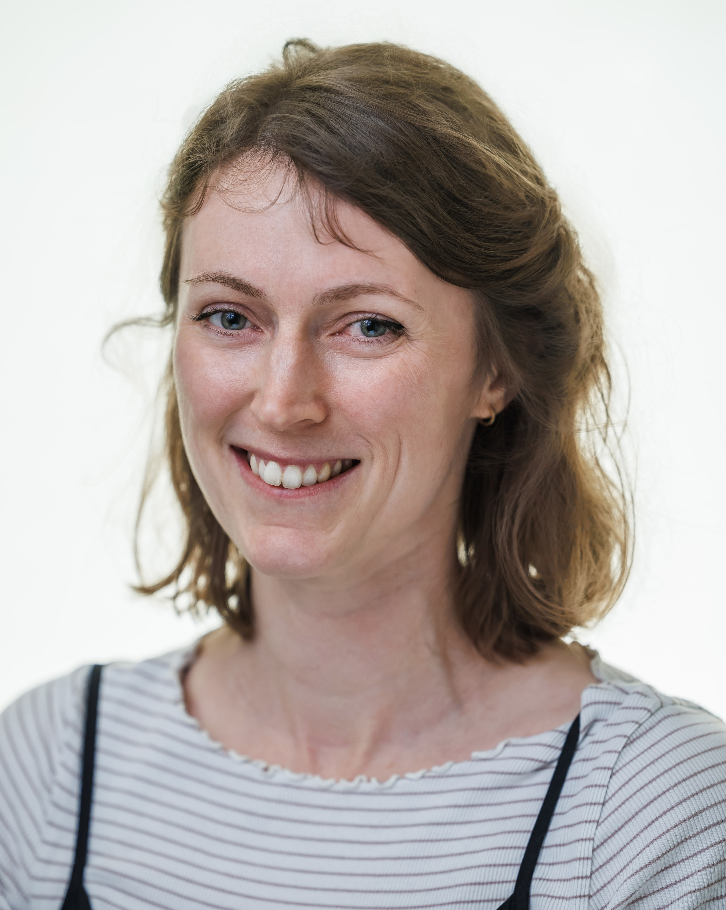

Lauren Sumner-Rooney
School of Biological Sciences, University of Bristol
Dr. Lauren Sumner-Rooney is an evolutionary and sensory biologist interested in invertebrate visual systems. She received her PhD from Queen’s University Belfast in 2015. She subsequently worked at the Royal Veterinary College in London, the Museum für Naturkunde in Berlin and the Oxford University Museum of Natural History. In October 2021, she established the MultiplEye Lab as an Emmy Noether Junior Group Leader at the Museum für Naturkunde. The lab moved to the University of Bristol in April 2026.
Her research focuses on how visual systems adapt to different environments. She investigates how the structure and organisation of eyes and brains reflect the ecology and evolutionary history of animals, including marine molluscs, echinoderms and spiders, from visually specialised predators to blind cave-dwelling species. Her work also explores how animals without eyes can detect and respond to light.